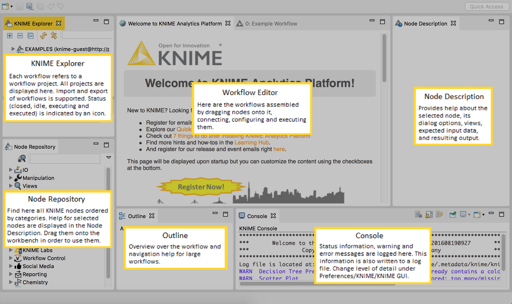

1. 下载并安装 KNIME，在你的 windows PC 上就可以。
https://www.knime.com/downloads?quicktabs_knimed=1#quicktabs-knimed
2. 启动 KNIME，你会看到界面：

3. 下载原始文件
iris.csv
example workflow.zip
我们利用提供的 sample workflow来作为示例，在这个样本 workfolw 中，将会完成：
> 1. 一个 File Readere node，用来导入 iris dataset
> 2. 一个 Color Manager node 来可视化的显示属性
> 3. 一个 statistics node 来计算一些统计信息
> 4. 一个 Partitioning node 来把 dataset 分成训练集和测试集
> 5. 一个 Decision Tree Learner 会利用训练数据集来生成一个预测模型
> 6. 一个 Ddecision Tree Predictor 会在测试机上进行过测试。
> 7. 一个 Score node 用来衡量 model 的性能
> 8. 一个 Interactive Table node 用来遍历那些分错的样本
> 9. 一个 Scattere Plot node 用来展示这些样本。
4.